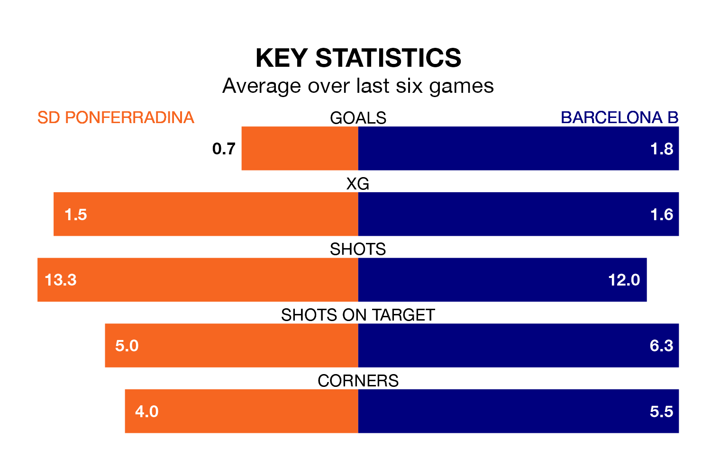

Barcelona B face a challenge to maintain their high-scoring form away against a tight SD Ponferradina defence on Saturday.
With 51 goals in 33 games, Barcelona B are the third-highest scorers in Primera Division RFEF Group 1 ahead of the 3pm kick-off at the Estadio El Toralín.
They face a Ponferradina side who have scored 33 in as many matches, but conceded only 20 goals, putting them second among the league's tightest defences – only Gimnàstic de Tarragona have conceded fewer goals.
In Pau Victor, Barcelona B have the league's sharpest shooter so far this season. He has notched 12 goals in 21 appearances.
His goal rate of one every 157 minutes is quicker than that of Yuri de Souza Fonseca, Ponferradina's top scorer with a goal every 204 minutes, and a total of five goals in 22 games.
The visitors are second in the table after 33 games, of which they have won 18 and drawn seven, earning 61 points.
The home side are three places behind Barcelona B in fifth, with 15 wins and 12 draws putting them on 57 points.
Ponferradina are in mixed form in Primera Division RFEF Group 1, with two wins and two draws from their last six games.
With four wins and a draw over that period, Barcelona B's form is better – they have taken 13 points from 18, compared to Ponferradina's eight.
Ponferradina's last match was on Sunday, a 0-0 draw against Arenteiro.
Barcelona B beat CD Lugo 1-0 last time out, also on Sunday.
Updated: 07:59 (UTC), 26/04/24